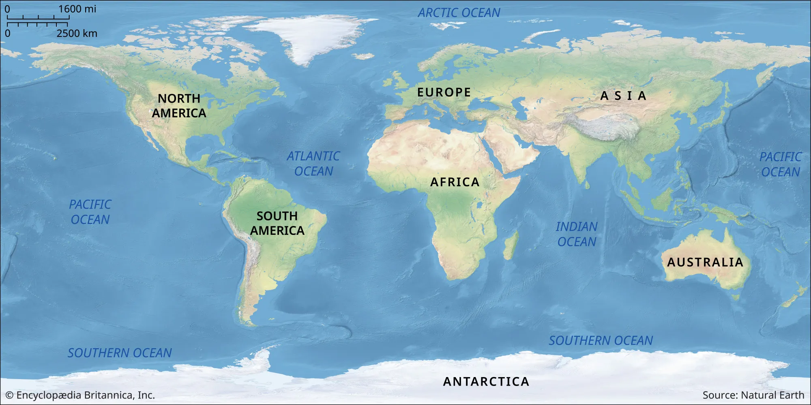

World Overpopulation Visualization
Current Population: 0
Maximum Capacity: 20,000,000,000
Predicted Year of Overpopulation: 2100

Population Details
Africa: 0
Europe: 0
Asia: 0
North America: 0
South America: 0
Australia: 0
Adjust Population